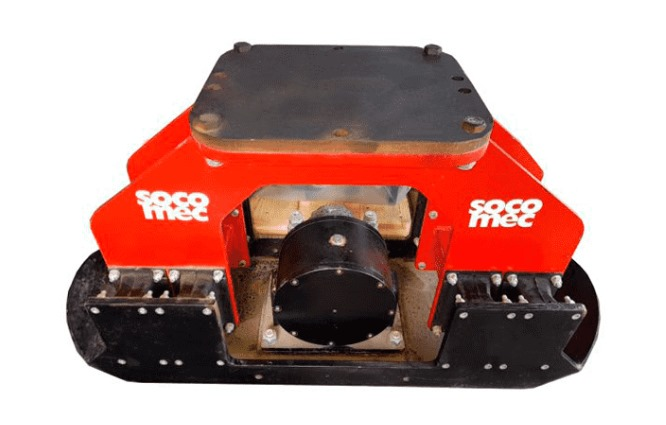
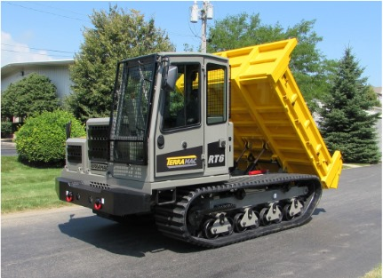
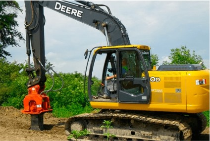
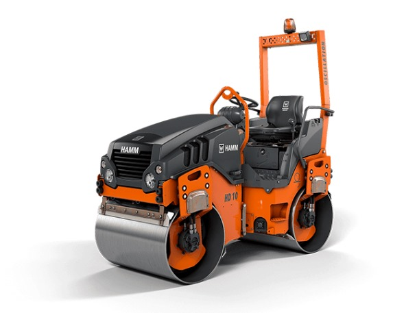

Construcción

Plato Compactador SPV-410
Las placas compactadoras Socomec están diseñadas con tecnología italiana para resolver problemas de compactación en terrenos profundos o pronunciados.
- Potencia: 13 hp
- Profundidad de compactación: 45 cm
- Velocidad de operación: 20 m/min
- Precio: $15,000 USD

Vehículo todo terreno RT6
Los vehículos multifuncionales de oruga Terramac son ideales para terrenos difíciles.
- Capacidad de carga: 5,500 kg
- Velocidad máxima: 10 km/h
- Potencia: 230 hp
- Precio: $250,000 USD

Excavadora Hitachi ZX300
Excavadora de alto rendimiento, diseñada para trabajos exigentes en la construcción con motor de 190 hp.
- Potencia del motor: 190 hp
- Profundidad de excavación: 7 m
- Capacidad del cucharón: 1.5 m³
- Precio: $350,000 USD

Camión Volquete Caterpillar 773G
Este camión volquete es perfecto para el transporte de material en grandes obras de construcción.
- Capacidad de carga útil: 60 toneladas
- Potencia del motor: 518 hp
- Velocidad máxima: 65 km/h
- Precio: $500,000 USD